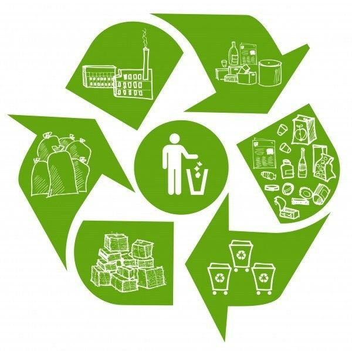
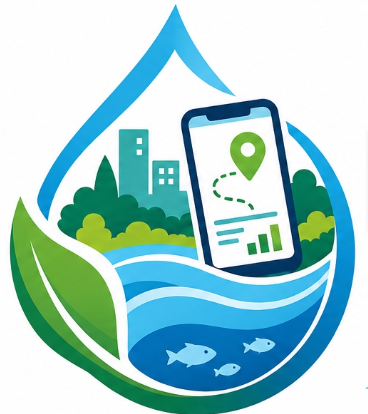

video
Panduan Pengolahan Limbah
Pelajari cara Mengelola Limbah dengan benar untuk mendukung keberlanjutan lingkungan.
Lihat →
LIMBAH SMARTPanduan pengelolaan limbah dan informasi layanan yang membantu masyarakat memahami cara memilah, menangani, serta memanfaatkan fasilitas pengolahan limbah secara lebih bijak.
Limbah yang mudah membusuk dan terurai secara alami.
Contoh: sisa makanan, daun kering, tulang, kulit buah.
Limbah yang susah untuk terurai dan tidak ramah lingkungan.
Contoh: plastik, kaca, kaleng, styrofoam, karet.

Pelajari cara Mengelola Limbah dengan benar untuk mendukung keberlanjutan lingkungan.
Lihat →Temukan layanan pengolahan limbah yang tersedia di daerah Anda dan cara mengaksesnya.
Lihat →Informasi mengenai Laporan terkait pengelolaan limbah. Laporan ini dirancang untuk memastikan informasi tentang pengelolaan limbah dilakukan secara bertanggung jawab dan ramah lingkungan.
Lihat →